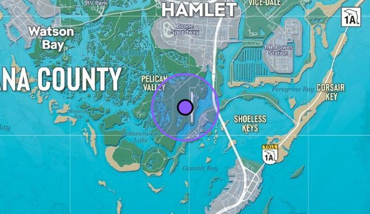

O laboratório alienígena secreto
Difícil · ⏱ 30+ minEstimativa pra quem já está perto do local
Uma instalação do governo abandonada, debaixo da terra, com esqueletos de funcionários, militares e até vacas. Lá dentro dá pra reanimar um pequeno alienígena cinza, e como agradecimento um OVNI destrói três carros do governo. Faz parte da mesma história da abdução.
Onde fica

📷 Ainda sem print deste easter egg. Tem um? Manda pra gente e leva o crédito.
📍 "Abandoned Site", a nordeste do Cottonmouth Lake, perto de uma pista de pouso ao sul de Hamlet
Como encontrar
- Primeiro, faça a abdução perto do Starlet Motel (a partir do Capítulo 2).
- Depois da abdução, durma no esconderijo: no sonho, os alienígenas dão a dica do código.
- Vá até o "Abandoned Site", a nordeste do Cottonmouth Lake, perto da pista de pouso ao sul de Hamlet.
- Digite o código no teclado da porta. Muita gente usou 2314, mas ele pode mudar de jogador pra jogador: é sempre uma combinação dos números 1, 2, 3 e 4.
- Desça de elevador, passe pelos esqueletos, aperte os botões do segundo painel e reanime o alienígena.
Descoberta creditada a The Truth Hurts e NFXC. Outros jogadores relatam os códigos 4123 e 3412.
Passo a passo em vídeo
Vídeo no YouTube · assistir no YouTube. Os créditos são do canal que publicou.
Fontes e créditos
WikiGTAVIwww.wikigtavi.comZacCoxTV: 50 GTA 6 Easter Eggs & Secrets (YouTube)www.youtube.comAOEAHwww.aoeah.comBuzzFeedwww.buzzfeed.com
Adicionado em 19/11/2026.